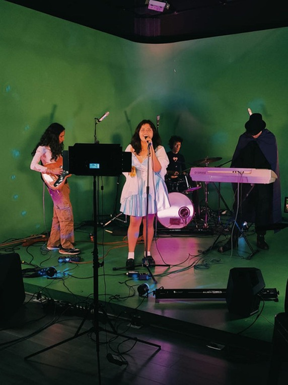

Primer EP: «Abyssal Tide»
Lanzamiento digital de su EP debut. Cinco tracks grabados en vivo en una cabaña sin electricidad de red, usando sólo equipos a batería y un micrófono sumergible.
Música · Esoterismo · Profundidades
"Donde los astros se ahogan en el mar,Descender
nace la canción que el océano olvidó."
Ciudad Submarina, 2024
Artista sonora emergente que habita en el umbral entre lo visible y lo sumergido. Su música nace de rituales nocturnos junto al agua: invocaciones mezcladas con síntesis analógica, voces que imitan el lenguaje de las profundidades.
Criada entre libros de botánica mágica y cassettes de música electrónica, construyó su primer sintetizador a los dieciséis años con piezas rescatadas del mercado de pulgas. Desde entonces, sus tracks son archivos acústicos de experiencias que no tienen nombre en ningún idioma humano.
Cada canción es un hechizo. Cada álbum, un libro de horas.
Lanzamiento digital de su EP debut. Cinco tracks grabados en vivo en una cabaña sin electricidad de red, usando sólo equipos a batería y un micrófono sumergible.
Seleccionada para una residencia artística de tres meses donde exploró la síntesis granular y la bioacústica marina como base compositiva.
Obra de arte sonoro inmersivo: un cuarto oscuro inundado de sonidos subacuáticos y proyecciones del fondo del océano, visitado por 800 personas en una semana.
El aislamiento se convirtió en laboratorio. Más de 40 piezas grabadas con lo que había: una voz, un teclado viejo y el sonido de la lluvia en la ventana.
Un proyecto discográfico en tres actos que mapea la degradación del océano a través de música electrónica ritual. Cada track es una especie marina que desaparece; cada silencio, una extinción.
La propuesta fusiona field recordings submarinos, síntesis modular y rituales sonoros inspirados en tradiciones de brujería costera del Atlántico Sur. El resultado es un álbum-hechizo: un documento acústico y un conjuro para despertar.
El llamado. Sonidos de génesis y marea alta.
El viaje al fondo. Oscuridad bioluminiscente.
El regreso transformado. Agua y fuego.
"No soy yo quien canta.
El océano me usa de boca."

Entra al taller sonoro: un secuenciador de ritmos y un piano mágico de acordes pensado para cualquier persona. No necesitas saber música. Solo necesitas escuchar.
Se abre en pantalla completa · Sin instalación